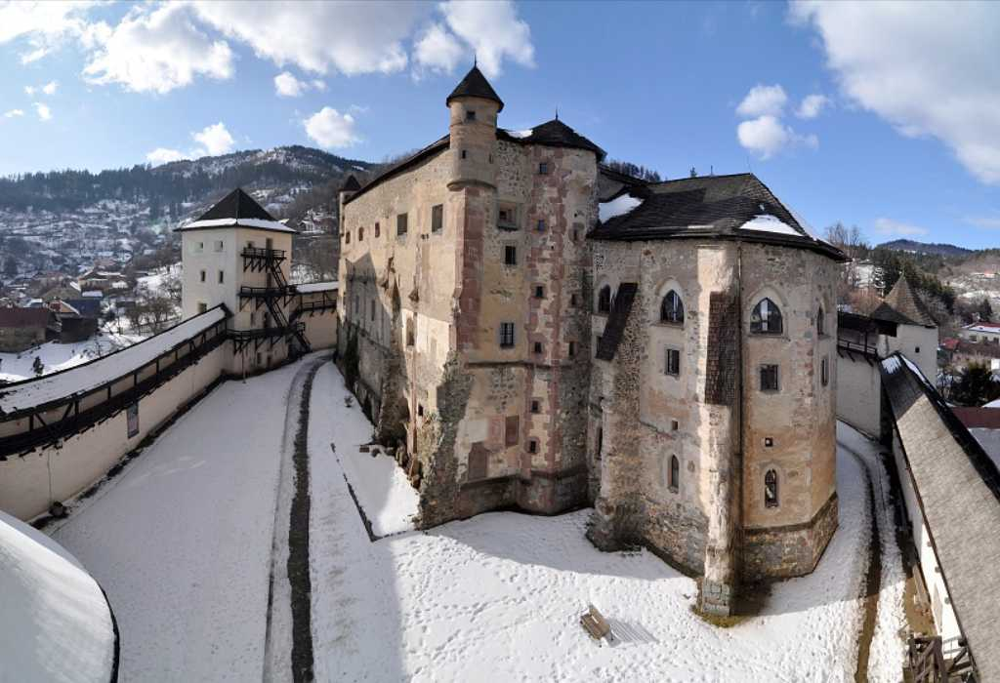
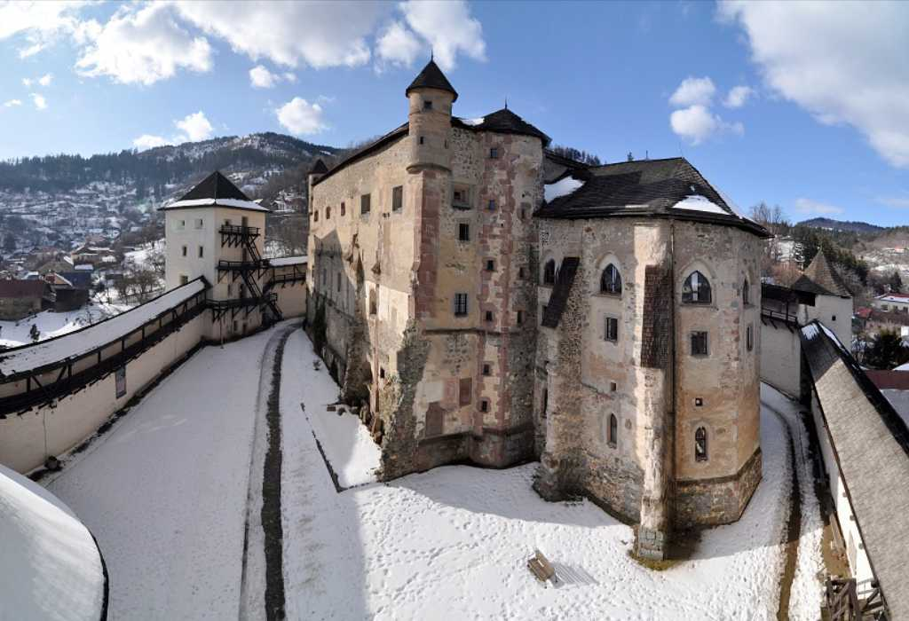

9. ÁLLOMÁS: AZ ÓVÁR, AHONNAN MINDEN TORONY LÁTSZIK
📍 Navigáció az Óvár kapujáhozKépzeld el, ahogy a meredek dombon kapaszkodsz felfelé, és hirtelen előtted magasodik a város egyik legősibb őrzője: az Óvár. Nem egyszerű kőfalak ezek – minden köve évszázadok történeteit suttogja. A vár szíve eredetileg egy háromhajós, román stílusú Mária-plébániatemplom volt, amelyet réges-régen, az 1200-as évek elején építettek ide, a hegy oldalába. Akkor még senki sem gondolta, hogy egyszer ágyúkkal, bástyákkal és lőrésekkel megerősített erőddé fog átalakulni.
A döntő fordulat a török hódítások idején jött el, a mohácsi csata után. A Magyar Királyság nagy része veszélybe került, a bányavárosok pedig különösen fontosak voltak, hiszen az arany, ezüst és réz innen töltötte fel a kincstárat. Selmecbánya ezért úgy döntött, hogy az imént felújított templomot teljesen erőddé alakítja: a templomhajók boltozatát lebontották, a templom belső terét udvarrá nyitották, a falakat pedig egy emeletnyivel megemelték. Így született meg a ma látható, négyszögletű, udvaros belső vár, körötte pedig a külső vár.
És most jön a történetnek az a része, amin a gyerekek (és a felnőttek is) fel szoktak nevetni: hiába építettek komoly falakat és bástyákat, az Óvár mögött magasodik a Paradicsom-hegy (szlovákul Paradajz). Ha egy ostromló sereg feljutott oda, fentről szinte „felülről lehetett ágyúzni” a várat. Katonai szempontból ez finoman szólva is “balek” döntés volt: olyan helyre építettek erődöt, amely fölé még magasabbról rá lehetett látni és lőni. Hála Istennek, a törökök sosem vitték itt végig a nagy ostromot, de a helyszínt látva ma is jól látszik, milyen kiszolgáltatott lett volna a vár, ha komoly támadás éri.
Az 1700-as évektől kezdve a vár már nem elsősorban katonai célokat szolgált. Volt itt városi levéltár, könyvtár, sőt egy időben rendőrségi fogda és még jégverem is a henteseknek.

 

Az alábbi rejtvényt az Óvár harangtornyában is megfejthetitek, ha van rá idő – vagy az Óvár bejárata előtti mellvéden is megfejthető. Ne feledjétek, az utolsó állomásotokra legkésőbb 5:45-re oda kell érnetek.
Rejtvény:
Figyeljétek meg az összes a TORNYOT, amit az Óvár harangtornyából kikémlelhettek. Erről a pontról nézve több jellegzetes tornyos épület rajzolódik ki a város felett. Ezek közül melyik az az 5 darab tornyos épület, amelyekkel a mai játék során megismerkedtetek?
Most nem a történetükre, hanem a nevük első betűjére lesz szükség. Méghozzá nyugatról keletre haladva, sorban! Egy kis segítség: az Óvár észak felől védelmezi a várost, tehát a városra lenézve, jobbra nyugszik le a nap…
Vegyétek ezeknek a neveknek csak az első betűjét sorrendben (dupla betű esetén mindkét betűt). Öt betűt kell kapnotok – ezekből fogtok majd egy pásztorkutya-nevet kirakni, ugyanis:
Selmecbánya környékén is, mint az egész felvidéken, a hagyományos paraszti étel (és Anya kedvence…) a juhtúrós galuska és a juhtúrós pirogi, a hagyományos ital pedig a juhtejes zsendice. A felvidéki juhtejnek nincs párja…. De a hegyek juhnyájait őrizni kellett. Méghozzá az ősi magyar fehér pásztorkutyákkal.
A feladvány: kik őrizték a felvidéki juhnyájakat?
Egy kis segítség: a legnyugatibb torony a mai első fejtörőtök volt… a legkeletibb torony pedig a világon a legszebb… 😊
Bónusz segítség: emlékeztek? “Borbála várának hivatalos neve: Újvár”
Ha ügyesen illesztitek be az öt betűt a megfelelő helyekre, egy ősi magyar fehér pásztorkutya neve rajzolódik ki előttetek – ugyanaz a fajta, amelyről azt mesélik, hogy a felvidéki hegyek juhnyáját is éberen őrizte éjszaka.
Írd be a pátsztorkutyák nevét többesszámban